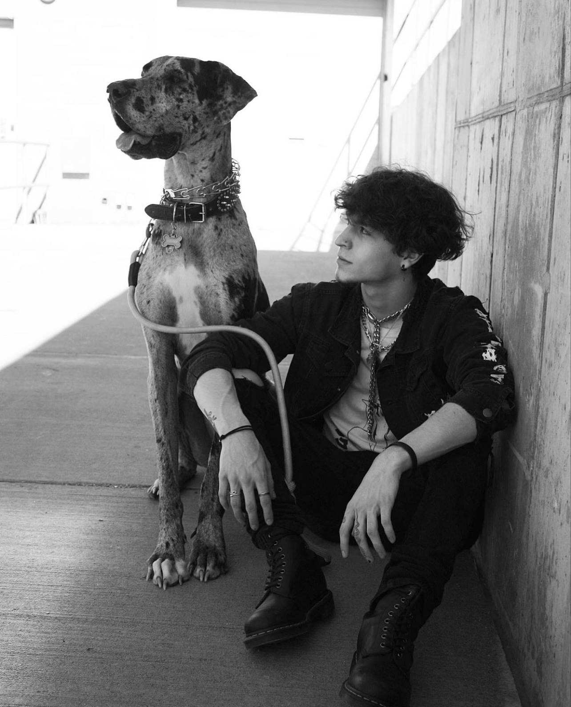

Jean's Portfolio
Graphic Designer / Web Designer
Hello everyone! My name is Jean Nunez and I am both a Graphic Designer and Web Designer. I focus on bringing you the best customer service possible as well as the most efficient and eye catching designs there are. For about 2 years now, I have worked towards not only expanding my knowledge of certain adobe programs (Photoshop, InDesign, Illustrator), but also mastering them. Eventually, I would love to build my own clothing brand once I am a bit more experienced with not only the design work, but the professionalism that comes with it. Below I have included an image of myself as well as a few of my best designs so that you can see what I am able to achieve. I hope you enjoy it!
Logos
Juices Jelly Logo
Adobe Illustrator, 2022
This logo was created for a project in which we had to create a packaging label for a product that we chose, so I decided I'd go with grape jelly. I focused on ensuring that the logo could speak that for itself.
Think Big Logo
Adobe Illustrator, 2023
For this project, we were instructed to create a logo for a large conference, and the topic was our choosing. The topic I chose for the conference was tattoos, which is why I decided to add a tattoo gun into the logo.
Volt Energy Logo
Adobe Illustrator, 2023
The purpose of this logo was to create one that is fitting for the type of drink we chose (EX. wine, energy drinks, water bottles, etc.). I decided I would go with an energy drink, so I used bright colors as well as implementing custom made lightning bolts so that it gives the feel of "energy."
Posters
Dog Magazine Poster
Adobe Photoshop, 2021
This project was the final for one of my Graphic Design courses. The final goal was to create a magazine poster on a topic of our choosing. For mine, I decided I would design a front cover for a dog magazine as they are a bit uncommon, and I have yet to see one in the style that I created.
Orchid Society Show Poster
Adobe Illustrator, 2022
For this project, we were instructed to make an event poster with custom orchids from scratch and implement them into our design. I decided I would add them on the sides of the poster to clear up the white space, and in return it brought out a strong design that has a nice flow to it. My favorite part of this project was creating the orchids as it was the first time I worked on making something "realistic" from scratch.
Game Conference Poster
Adobe Illustrator, 2021
Probably one of my most unique designs! Since the topic for this project was a gaming conference, I figured that the best way to implement that was by adding pixelated text and elements. On top of that, a pixelated heart (like the one I created) is usually associated with games as that is where you most commonly see it, and anyone who is interested in an event of that type would instantly recognize it.
Sci-Fi Movie Poster
Adobe Photoshop, 2022
This project is one of my most recent designs. The goal for this was to create a Sci-Fi movie poster of our choosing. The entire project was to be done in photoshop, which is my preferred program to use. Every element in this project, other than the background, was created entirely from scratch using different design techniques that I have learned throught my years of designing. By far, this is one of my favorite designs that I have made.
NC Zoo Poster
Adobe Photoshop, 2022
Designing this poster was enjoyable from start to finish! This project was one of the first that I did, however it is still one of my favorites. We were instructed to create a poster for the NC Zoo, and the rest was up to us. I decided I would begin by implementing the circles that you see, and clipping the images of the animals to it so that the only thing that would be visible is the focal point of each image. There are also subtle paw prints in the background which would assist with the viewing. They were both placed in that manner so that the poster "flows" downwards, which would eventually lead the viewers eye to the NZ Zoo logo.
Custom Fonts
Simplified Nordic Font
Adobe Illustrator, 2022
For this project, we were instructed to make a custom font that not only looks good, but is usable and consistent. This was the first time I have attempted at making a font, and I was quite pleased with the way it turned out. I wanted to keep the font simple, but add numerous elements to each letter so that it stands out compared to other fonts. A font like this would be perfect for a "nature" theme or something of the sort.
Other Designs
Kids Friendly Monster
Adobe Illustrator, 2022
Out of all the projects I've done, this one definitely pushed me to my limits. The end goal was to create a monster that is child-friendly and appealing to the youth. We were givin a prompt which was a name, (mine was The Terrific 8-Legged Von Grimbleton) and based off of that we had to create the strongest design possible.
Air Fryer Exploded View
Adobe Illustrator, 2022
The purpose behind this design was to create an exploded view of an item of our choosing. For my item, I chose an air fryer as I have physical access to one and that makes it much easier to work with. I started off by taking it apart and taking pictures of each part individually so that I could precisely create them in illustrator. This ended up being one of my better designs and helped me learn new techniques that I did not know before.
David Airey Influenced Book Cover
Adobe Illustrator, 2021
Although one of my most simple designs, it is still one of my best. The instructions for this project were to create a book cover that is influenced by a graphic designer (that has book covers in their portfolio). I decided I would go with David Airey as I have always been fond of simple designs, and that is exactly what he does, but he does it greatly. Below is a link to his portfolio in case you are interested!
David Airey's PortfolioContact Me!
If you are interested in working with me, please do not hesitate to reach out! State your reason for contact in the subject box and I will get back to you ASAP!
NunezJc3@gmail.com